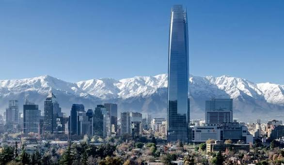

21
Jul
Santiago
3 nights — Chile's cosmopolitan capital
Winter · 4–14°C · mostly dry & sunny



24
Jul
San Pedro de Atacama
4 nights — the driest desert on Earth
Arid desert · −5–18°C · freezing nights, warm sunny days